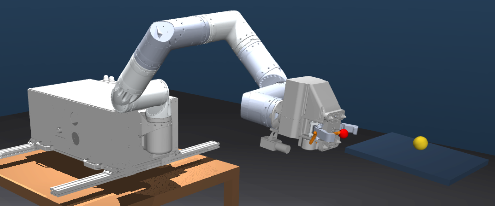
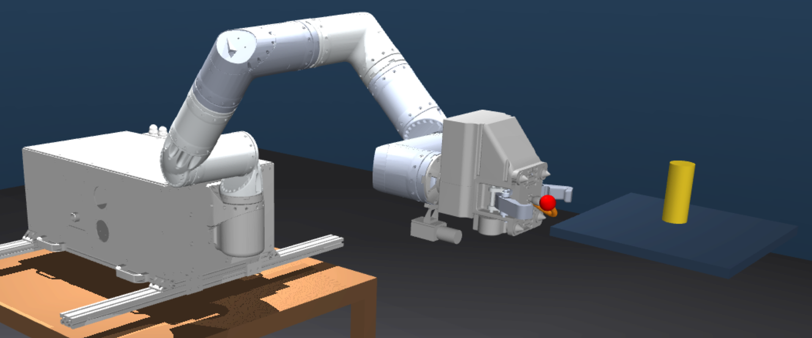
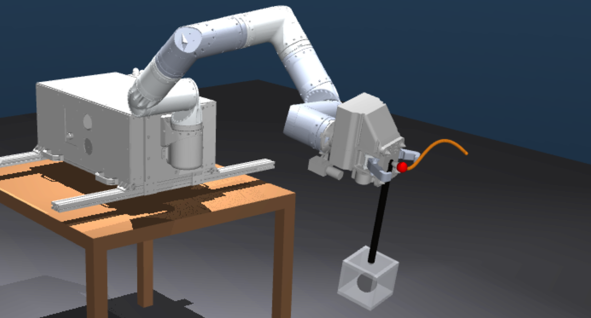
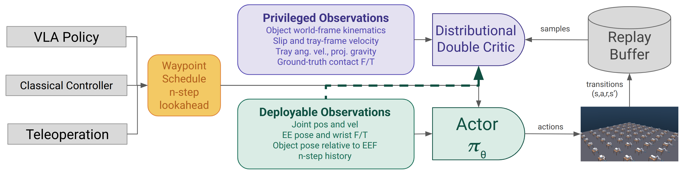
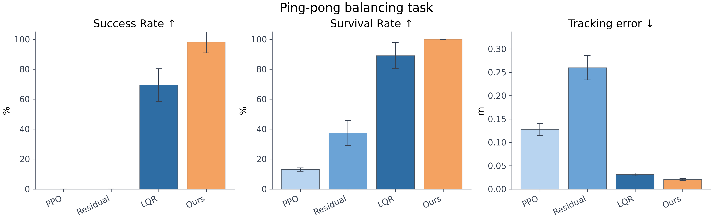
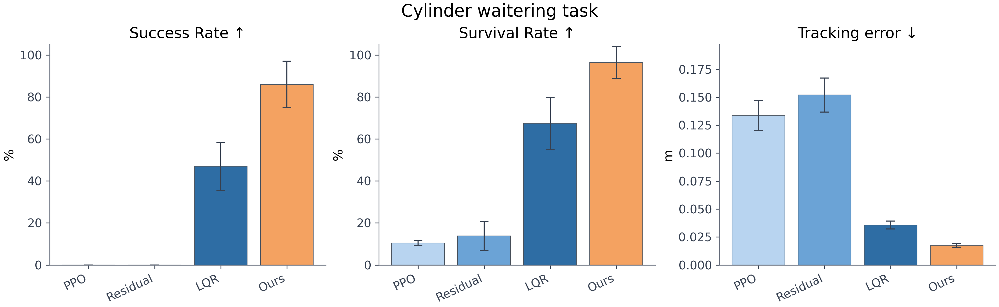
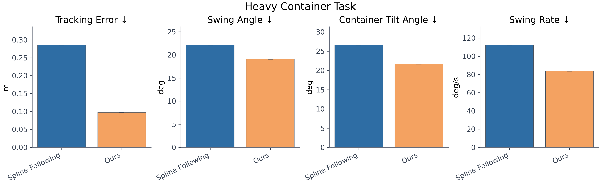

Recent robotic foundation models have demonstrated impressive generalization across diverse tasks, yet consistently struggle with dynamically sensitive manipulation where physical precision is critical for success. The standard remedy, task-specific fine-tuning, demands additional data collection, significant compute, and risks catastrophic forgetting of previously acquired capabilities.
We present BalancingAct, a framework that trains lightweight reinforcement learning (RL) heads in simulation, conditioned on waypoints rather than raw goals. This decouples global planning, which can be delegated to any base policy such as one generated from a Vision-Language-Action (VLA) model, classical controller, or teleoperation system, from the locally precise, dynamics-aware execution that the RL policy learns to handle.
BalancingAct requires no additional real-world data collection, outperforms classical controllers on dynamically sensitive tasks, and through aggressive domain randomization over physical parameters, learns execution policies robust to variations in contact, inertia, and disturbance conditions that classical approaches fail to handle. We validate BalancingAct on a suite of dynamically sensitive manipulation tasks in simulation and demonstrate successful real-world deployment.
A dynamically sensitive task is one in which the system state evolves under nonlinear, underactuated dynamics such that small deviations in control inputs can produce divergent outcomes. For our object-centric tasks, consider a system with state st = (qt, q̇t, xt, ẋt), where qt denotes robot joint positions/velocities and xt denotes the position and velocity of a secondary object subject to contact and gravity.
The object dynamics take the form ẍt = f(xt, ẋt, ut, λt), where ut is the control input and λt represents discontinuous contact forces. A task is dynamically sensitive when the sensitivity of object dynamics to control inputs is large or poorly conditioned, meaning errors in ut produce disproportionately large deviations in xt that compound over time and are difficult to recover from.
We evaluate on three tasks, each requiring an object to remain stable while the end effector tracks a waypoint-scheduled spline trajectory. The challenge is twofold: maintaining stability during motion, and damping out accumulated instabilities during the terminal hold at the endpoint.

The robot moves a tray along a planned path while keeping the ball from rolling off. The goal is smooth motion that keeps the ball supported and close to the tray center.

The robot carries an upright cylinder on the same tray. The goal is to follow the path without shaking the tray enough to make the cylinder tip over.

The robot moves a suspended container holding a heavy ball. The goal is to follow the path while damping swing and tilt, instead of simply dragging the container along.
BalancingAct separates the job of planning where the robot should go from the harder job of keeping the payload stable while it gets there. A planner, VLA, classical controller, or teleoperator can provide waypoints; the learned policy turns those waypoints into stabilizing end-effector motions.
During deployment, the actor only uses observations that are available onboard, such as robot state, wrist force/torque, object pose, recent motion history, and upcoming waypoints. During training, an asymmetric critic also sees privileged simulator state, giving the policy richer feedback without requiring those privileged signals on the real robot.
Policies are trained with FlashSAC in MJLab using many parallel MuJoCo environments and randomized physical conditions. Because FlashSAC is off-policy, data collection is decoupled from learning: rare terminal failures can be replayed and learned from repeatedly, instead of waiting for fresh complete rollouts as on-policy methods like PPO must. This makes learning much faster and better suited to sparse failures, delayed terminations, and recovery behaviors that only appear late in an episode.

Figure 3. BalancingAct uses FlashSAC, an off-policy RL algorithm, to train a waypoint-conditioned actor with deployable observations, guided by an asymmetric critic with privileged simulation state. Any upstream planner can supply waypoints while the policy handles local dynamic stabilization.
BalancingAct is trained in massively parallel simulation so the policy sees many contact, inertia, and disturbance variations before deployment.
We evaluate each policy across path lengths, curve difficulties, stationary holds, and both quiet and disturbed settings. Each task is domain-randomized over friction and other task-specific environment properties, such as object mass, geometry, payload behavior, and disturbance forces. A rollout only succeeds if the robot tracks the planned motion and keeps the object stable through the final hold, so the results measure both path following and dynamic stabilization.



@article{balancingact2026,
author = {Anonymous},
title = {BalancingAct: Waypoint Guided Reinforcement Learning For Dynamically Sensitive Tasks},
journal = {CoRL},
year = {2026},
}